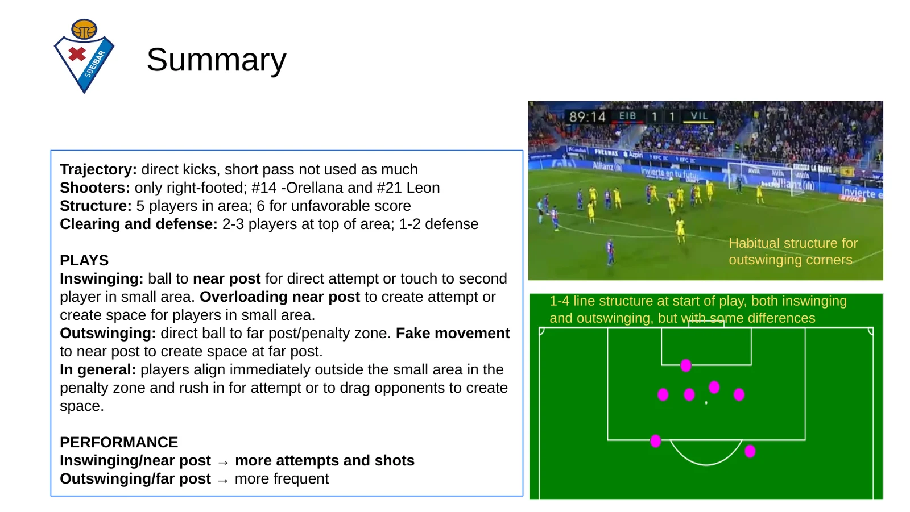
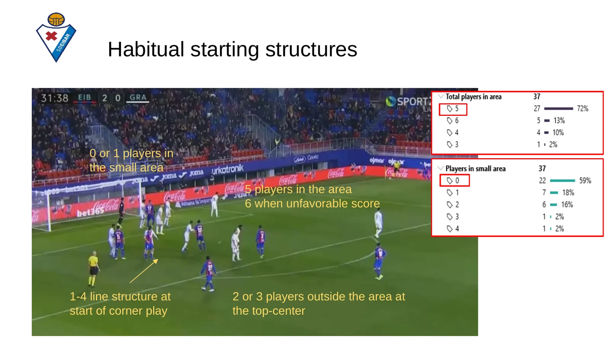
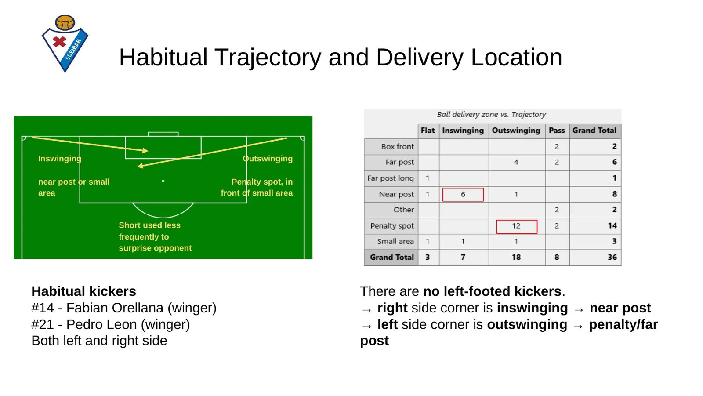
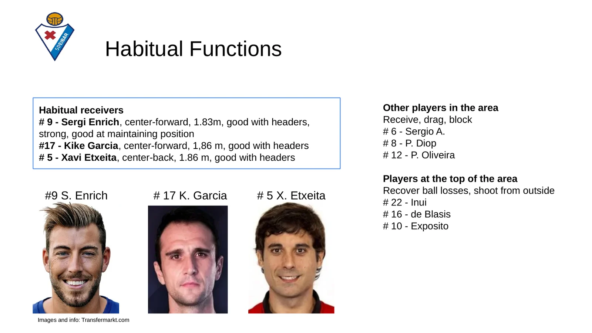
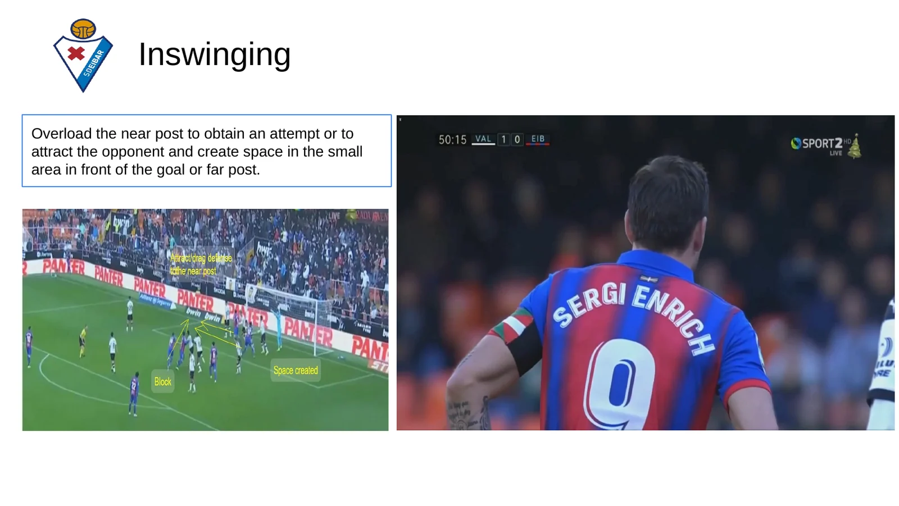
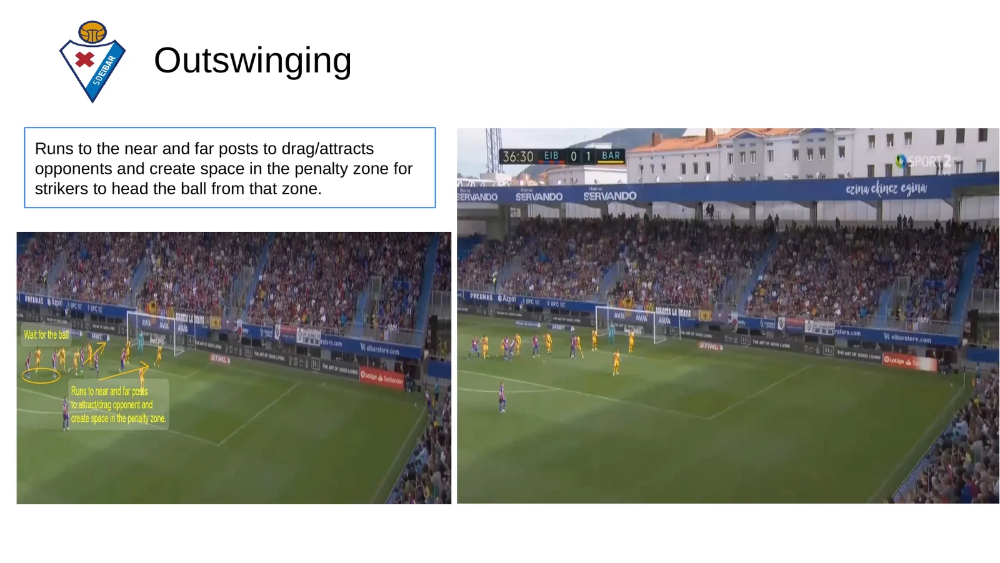
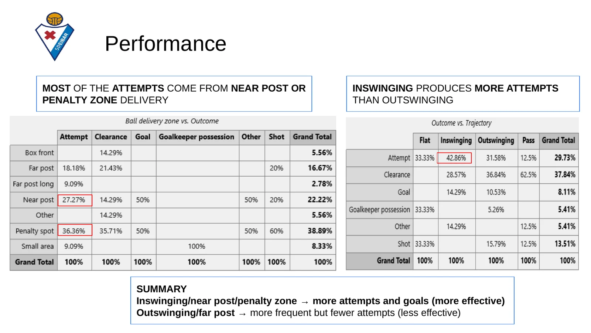

A set-piece report has one job: tell the coaching staff exactly what the opponent will do at a corner, and how to stop it. Before the match, the defenders need to know where the ball is likely to go, who will attack it and what movements are coming.
This report analyses 37 attacking corners by SD Eibar. It was my main project in the FC Barcelona Innovation Hub set-piece analysis course, part of the Football Tactical Analyst Certificate.
My framework: eight questions for every opponent
Every coach wants a different format — a short clip with three talking points, a full presentation, or more numbers than video — so the report always adapts to the staff and to the deadline. But the questions I answer are always the same:
- Structure — how are they organised before the kick, and how many players are in the box, the six-yard area and at the top of the box?
- Trajectory — inswinging, outswinging, flat or short?
- Delivery zone — near post, far post, six-yard area or penalty spot? Direct attempts or second balls?
- Kickers — who takes them, with which foot, and from which side?
- Receivers — who attacks the ball, and do the centre-backs go up?
- Movements — blocks, decoy runs, drags and timing.
- Performance — how many attempts and goals each option produces.
- Patterns — which combinations are the real threat.

1. Structure: a 1-4 line, five in the box
Eibar start most corners from a 1-4 line just outside the six-yard box. They usually commit five players to the area — six when they are losing — with zero or one inside the six-yard box at the start. Two or three players stay at the top-centre of the box for second balls and to protect against the counter-attack.

2–4. Trajectory, delivery and kickers: the side decides the swing
Both habitual takers — wingers #14 Fabián Orellana and #21 Pedro León — are right-footed and take corners from both sides. That makes Eibar predictable: from the right the ball is inswinging, mostly to the near post; from the left it is outswinging, towards the penalty spot or far post. Short corners are rare and used mainly as a surprise.

5. Receivers: three aerial targets
The ball is aimed at #9 Sergi Enrich and #17 Kike García, two strong centre-forwards in the air, and at centre-back #5 Xavi Etxeita. The rest of the players in the box receive, drag or block, while the players at the top of the box recover loose balls and shoot from distance.

6. Movements: overload or drag
With inswinging corners, Eibar overload the near post: either they win the first contact there, or they pull defenders towards it and open space in front of goal and at the far post.

With outswinging corners, players run to both posts to drag their markers and free the penalty spot for the strikers arriving to head the ball.

7–8. Performance and patterns: where the danger really is
The numbers show a clear pattern. Most attempts come from deliveries to the near post or the penalty spot, and inswinging corners produce more attempts and goals than outswinging ones. Outswinging corners to the far post are Eibar's most frequent option, but the least effective.

What I would tell the coaching staff
- Right-side corners: expect an inswinger to the near post with an overload — protect that zone first and win the first contact.
- Left-side corners: expect an outswinger to the penalty spot after decoy runs to both posts — don't follow the runners, hold the central zone.
- Key players: track Enrich, García and Etxeita in the air.
- After the clearance: have players ready at the top of the box, where two or three Eibar players wait for the second ball.